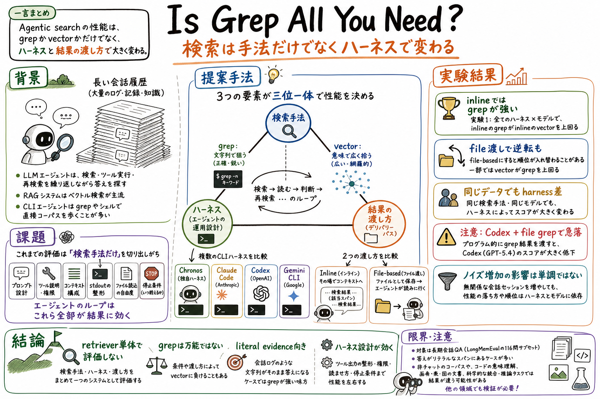

1
第一の貢献は、grep とベクトル検索を、エージェントの実行ループの中で比較していること。検索器だけを固定パイプラインで評価するのではなく、ツール呼び出し、文脈構成、検索結果の読み方まで含めている。
Reading artifact
この論文は、エージェント検索の性能を「grep かベクトル検索か」だけで決めない。検索手法、エージェントを動かすハーネス、検索結果の渡し方をまとめて一つのシステムとして評価する。

この論文の中心問いは、エージェントが大きな資料群を検索するとき、検索手法だけを比べてよいのか、ということ。普通の検索評価では、grep や BM25 のような文字列検索と、埋め込みを使うベクトル検索を別々に比べがちである。しかし実際のエージェントは、検索結果を受け取り、読み、次の検索語を考え、止めるか続けるかを判断する。その全体は、検索器単体ではなくハーネス込みで動いている。
著者らは、LongMemEval から116問を取り出し、長い会話履歴に対する質問応答で実験している。比較するのは、文字列で狙う grep と、意味の近さで広く拾うベクトル検索。さらに、独自ハーネスの Chronos と、Claude Code、Codex、Gemini CLI のようなプロバイダー製 CLI ハーネスを比べる。
もう一つ重要なのが、検索結果の渡し方である。検索結果をそのまま会話文脈へ入れる inline 方式と、結果をファイルに書き出してエージェントに読ませる file-based 方式を比べている。前者はすぐ読めるが文脈を圧迫する。後者は大きな結果を保持できるが、エージェントがファイルを開いて統合する追加作業を正しくこなす必要がある。
結果は、単純な「grep が勝つ」ではない。Experiment 1 の inline 条件では、すべてのハーネス・モデルの組み合わせで grep がベクトル検索を上回る。一方で、file-based 方式にすると順位が入れ替わる場合があり、Codex と GPT-5.4 の組み合わせでは programmatic grep が大きく落ちる。つまり、検索結果の渡し方そのものが別のツール利用課題になる。
読後に残るポイントは、エージェント検索を retriever 単体で評価してはいけない、ということ。grep は、会話履歴の中にそのまま残っている日付、好み、発言、数値を拾うには強い。しかし証拠が言い換えられている資料、コード意味理解、視覚資料、科学論文の統合では違う結果になりうる。検索手法、ハーネス、結果の渡し方を一体で見る必要がある。
Is Grep All You Need? は、エージェント検索における grep とベクトル検索を、ハーネスや結果の渡し方込みで比べる実験論文である。
対象は、長い会話履歴から必要な証拠を見つけて質問に答える LongMemEval の一部である。エージェントは、会話履歴や時系列イベントを検索し、証拠を読み、最終回答を作る。
論文の狙いは、検索器単体のランキング性能ではなく、エージェントが検索結果をどう受け取り、どう読み、いつ止めるかまで含めた実行性能を見ることにある。
第一の貢献は、grep とベクトル検索を、エージェントの実行ループの中で比較していること。検索器だけを固定パイプラインで評価するのではなく、ツール呼び出し、文脈構成、検索結果の読み方まで含めている。
第二の貢献は、Chronos、Claude Code、Codex、Gemini CLI という複数のハーネスを比べていること。同じ会話データでも、どのハーネスで動かすかによって結果が大きく変わる。
第三の貢献は、検索結果を会話文脈に直接入れる方式と、ファイルに保存してエージェントに読ませる方式を分けて比べていること。file-based 方式は文脈圧迫を避けられるが、別の読み取り・統合タスクを作る。
第四の貢献は、関係ない会話セッションを増やして、ノイズが増えたときに grep とベクトル検索の関係がどう変わるかを見ていること。性能低下は単調ではなく、ハーネスとモデルに依存する。
実験には、LongMemEval の116問サンプルを使う。質問は、知識更新、複数セッションの統合、ユーザーの好み、ユーザー発言、時間推論などのカテゴリにまたがる。
検索対象は、会話の発話と、Chronos が抽出した時系列イベントである。これに対して、grep は正規表現や文字列一致で検索し、ベクトル検索は埋め込みインデックスを使って意味的に近い記録を返す。
ハーネスは、独自実装の Chronos と、Claude Code、Codex、Gemini CLI を比べる。CLI ハーネスでは、エージェントが grep や検索スクリプトをシェル経由で呼べる。
検索結果の渡し方は二種類ある。inline 方式では検索結果がそのまま会話文脈へ入る。file-based 方式では検索結果がファイルに書かれ、エージェントはそのファイルを読むか、さらに grep して中身を探す。
評価は、エージェントの最終回答を GPT-4o の採点器で判定する。Experiment 1 は検索手法、ハーネス、結果の渡し方を比較し、Experiment 2 は不要な会話セッションを増やしたときの変化を見る。
Experiment 1 では、inline 方式に限ると、すべてのハーネス・モデルの組み合わせで grep がベクトル検索を上回った。特に、LongMemEval のように日付、好み、発言、数値などの文字列証拠を拾う課題では、文字列検索が強い。
ただし、同じモデルでもハーネスを変えると結果は大きく変わる。たとえば Claude Opus 4.6 は、Chronos の inline grep で 93.1% だが、Claude Code の inline grep では 76.7% になる。これは、検索器だけでなく、プロンプト、ツール説明、出力整形、停止判断が効いていることを示している。
file-based 方式にすると、grep とベクトル検索の順位は一部で入れ替わる。特に Codex と GPT-5.4 の組み合わせでは、inline grep が 93.1% なのに、programmatic grep は 55.2% まで落ちる。検索が安くても、結果ファイルを開いて統合するループが不安定だと性能は崩れる。
Experiment 2 では、関係ない会話セッションを増やしても性能は単純に右肩下がりにはならない。ある設定ではベクトル検索が強く、別の設定では grep が追いつく。ノイズ量だけでなく、どのハーネスで、どのモデルが、どんな検索語を作るかが効いている。
論文の結論は、grep が常にベクトル検索に勝つという主張ではない。むしろ、文字列証拠が残る会話履歴では grep が強い一方、エージェント検索の性能は検索手法、ハーネス、結果の渡し方の三つで決まる、という主張である。
この結果は、長い会話履歴に対する質問応答に強く結びついている。答えの根拠がそのままの文字列として残っている課題では grep が有利になりやすい。
科学論文の統合、コードの意味理解、画像や表を含む資料、言い換えが多い文書では、ベクトル検索やハイブリッド検索の見え方は変わる可能性がある。
実験は特定のモデル、特定の CLI ハーネス、特定の実装で行われている。プロバイダー側のハーネスは内部実装が完全には見えないため、差の原因をすべて分解できるわけではない。
Codex の一部のスケーリング行は未完であり、すべてのベンダーについて完全に対称な比較ができているわけではない。
Experiment 1 の表は最重要。grep、ベクトル検索、inline、file-based、Chronos、Claude Code、Codex、Gemini CLI の組み合わせで、同じ検索手法でも結果がどれだけ変わるかを見る。
Experiment 2 の表は、不要な会話セッションを増やしたときの変化を見る場所。性能が単調に落ちないこと、grep とベクトル検索の順位がハーネスごとに変わることが分かる。
Introduction と Overview は、検索手法、ハーネス、結果の渡し方を別々の部品ではなく一つのシステムとして見るための前提を作る場所。
この論文は、Direct Corpus Interaction の次に読むとよい。資料庫を直接歩くという発想に、ハーネスと結果の渡し方という実装面の条件を足してくれる。
How to Interpret Agent Behavior と並べると、検索結果だけでなく、エージェントがどう検索し、どう読んで、どこで止めたかを行動として観察する必要が見えてくる。
実務に引くなら、wiki や repo の探索で、retriever を変える前に、検索結果を文脈へ入れるのか、ファイルとして読ませるのか、grep / file read / shell をどう許すのかを点検するとよい。
エージェント検索の性能は、grep かベクトル検索かだけで決まるのか。それとも、ハーネスや検索結果の渡し方まで含めて決まるのか。
CLI エージェントでは grep や shell が自然に使え、日付や発言のような文字列証拠を直接探す課題では非常に強いから。
そうではない。会話履歴のように文字列証拠が残る課題では grep が強く出たが、言い換えや意味理解が重要な領域では結果が変わりうる。
エージェントを動かす実行環境のこと。プロンプト、ツール呼び出し、文脈構成、検索結果の整形、停止判断などを管理する。
検索結果をそのまま会話文脈へ入れる方式。すぐ読めるが、結果が大きいと文脈を圧迫する。
検索結果をファイルに保存し、エージェントが必要に応じてファイルを読む方式。文脈圧迫は避けられるが、読み取りと統合の追加作業が発生する。
inline 条件では grep がすべての組み合わせでベクトル検索を上回った一方、file-based 条件では順位が入れ替わることがあり、ハーネス差も大きかったこと。
GPT-5.4 と Codex CLI では、inline grep が 93.1% と強い一方、programmatic grep は 55.2% まで落ちた。検索自体より、結果ファイルを扱うループが効いている可能性がある。
retriever だけを差し替えるのではなく、検索結果の表示、ファイル化、ツール説明、grep / read / shell の使わせ方をまとめて設計・評価する。
エージェント検索は、検索器単体の勝負ではない。検索手法、ハーネス、結果の渡し方が一緒に性能を作る。